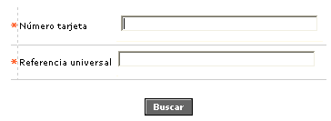
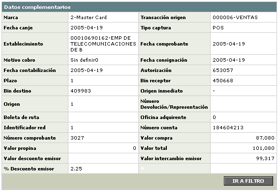
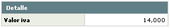
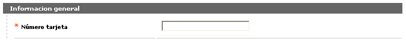
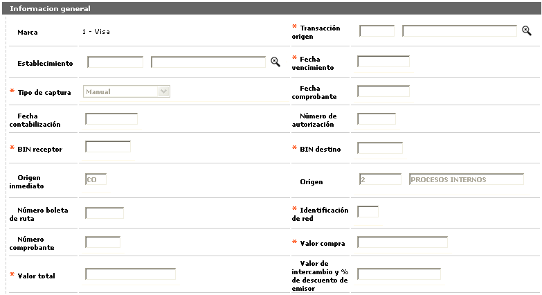
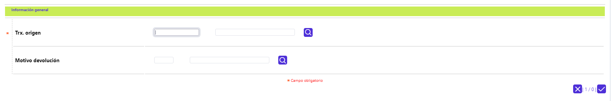
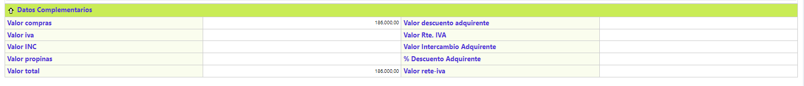

Contracargos
Ingresar: El formulario inicial consta de dos campos que permiten ingresar los datos principales de la transacción a autorizar. El botón salvar sólo se habilita una vez éstos hayan sido ingresados.
El formulario cuenta con las opciones Número tarjeta y Referencia universal, y permite ir a la opción anterior a través del botón Cancelar.

|
Número tarjeta |
Campo en el que se ingresa el número de la tarjeta asociado a la transacción en disputa para su búsqueda |
|
Referencia universal |
Se ingresa el número dado por el sistema tanto para el canje enviado como para el recibido, que identifica de manera exclusiva a cada transacción dentro de todo el universo transaccional. |

Datos complementarios: Grupo de datos desplegados que ilustran suficientemente la información básica de una transacción en disputa. A pesar de disponer de la misma información, los únicos campos que no son comunes entre los roles de emisor y adquirente son "Origen inmediato y Origen" que sólo aplican para el primero de estos.

Localización: El formulario cuenta con un globo de localización que muestra los siguientes datos:

Adicionar notas débito: A través de esta opción el sistema permite grabar cargos a las tarjetas crédito que lo requieran, de acuerdo a los procesos de contracargos.

|
Número tarjeta |
Muestra el número de la tarjeta asociado a la transacción en disputa. |

|
Marca |
Se ingresa el código de la franquicia a la que pertenece el plástico mediante el que se realizó la transacción. |
|
Transacción origen |
Lista de valores que despliega tanto el código como el nombre asociado a cada tipo o clase de transacción enviada o recibida dentro del proceso de intercambio, con base en la codificación determinada por las franquicias y parametrizada mediante la opción Orígenes de transacciones del grupo de Tablas reservadas del Núcleo. |
|
Establecimiento |
Campo opcional en el que se debe ingresar el código del establecimiento involucrado en la nora débito. |
|
Fecha vencimiento |
Campo con formato YYYY-MM-DD en el que se ingresa la fecha en la cual se vence el plazo definido de la nora débito. |
|
Tipo de captura |
Señala el nombre asociado al código definido por la franquicia que identifica la manera como ingresó, por medio de su red, la transacción al sistema (POS, ATM’s, oficinas, etc.). |
|
Fecha comprobante |
Muestra la fecha física del comprobante de consumo o utilización en formato YYYY-MM-DD. |
|
Fecha contabilización |
Corresponde a la fecha de contabilización del movimiento, la cual regularmente, corresponde a la fecha de proceso, sin embargo cualquier registro podría llegar con una fecha diferente de contabilización, por tal razón se muestra esta información en este campo. |
|
Número autorización |
En este campo se ingresa el Número de autorización dado por el sistema. |
|
Bin receptor |
Campo obligatorio en el cual se ingresa el prefijo o bin centro de proceso de la entidad a través de la que ingresa la transacción. |
|
Bin destino |
Campo obligatorio en el cual se ingresa el prefijo o bin centro de proceso de la entidad emisora del plástico. |
|
Origen inmediato |
Este campo se muestra por defecto como 'CO', indicando que proviene del origen de Contracargos. |
|
Origen |
Campo que despliega por defecto el código '2', que indica que proviene de un Proceso interno. |
|
Número boleta de ruta |
Campo opcional en el cual se ingresa este número asignado por el sistema. |
|
Identificación red |
Campo obligatorio en el cual se indica el código de la red a través de la cual ingresó la transacción. |
|
Número comprobante |
Se ingresa el número del voucher asociado a la transacción en disputa. |
|
Valor compra |
Campo obligatorio de 14 dígitos y dos decimales en el cual se ingresa este valor para realizar el ajuste. |
|
Valor total |
Campo obligatorio de 14 dígitos y dos decimales en el cual se ingresa este valor para realizar el ajuste. |
|
Valor de intercambio y % deescuento emisor |
Campo opcional de dos dígitos y dos decimales en el cual se ingresa este valor en caso de que aplique. |
Transacciones asociadas: Corresponde a las diversas transacciones que pueden darse dentro del proceso de intercambio. El formulario permite el ingreso de transacciones, más no el borrado de aquellas recibidas o enviadas por la otra entidad involucrada. Cuenta con las opciones Detalle e Ingresar.

Ingresar: La opción muestra un formulario wizard con dos pasos: Transacción asociada y Resumen.
El formulario Transacción asociada despliega los siguientes campos:

|
Transacción origen |
Lista de valores que despliega tanto el código como el nombre asociado a cada tipo o clase de transacción enviada o recibida dentro del proceso de intercambio, con base en la codificación determinada por las franquicias y parametrizada mediante la opción Orígenes de transacciones del grupo de Tablas reservadas del Núcleo. |
|
Motivo cobro |
Contiene tanto el código como el nombre asociado a las transacciones de notas débito o crédito generadas como resultado del proceso de intercambio, y que ilustran la motivación de esos cargos o abonos interentidades. |
|
Motivo devolución |
Lista de valores que permite ingresar tanto el código como la descripción o nombre de la causa o motivo por la que la transacción fue devuelta por la entidad emisora del plástico asociado a la misma. |
|
Bin fuente |
Campos que ilustran tanto el prefijo o bin centro de proceso de la entidad a través de la que ingresa la transacción como el de la entidad emisora del plástico, lo que facilita la interpretación de la dirección de cada transacción. |
|
Bin destino |
Campos que ilustran tanto el prefijo o bin centro de proceso de la entidad a través de la que ingresa la transacción como el de la entidad emisora del plástico, lo que facilita la interpretación de la dirección de cada transacción. |
|
Fecha canje |
Despliega la fecha en formato YYYY-MM-DD en que ingresó la transacción asociada al proceso de intercambio a través del canje. |
|
Fecha proceso |
Despliega la fecha en formato YYYY-MM-DD en que fue procesado el movimiento que contiene la transacción relacionada con el proceso de intercambio. |
Resumen: Si el usuario invoca la opción Resumen se despliega el siguiente formulario:
